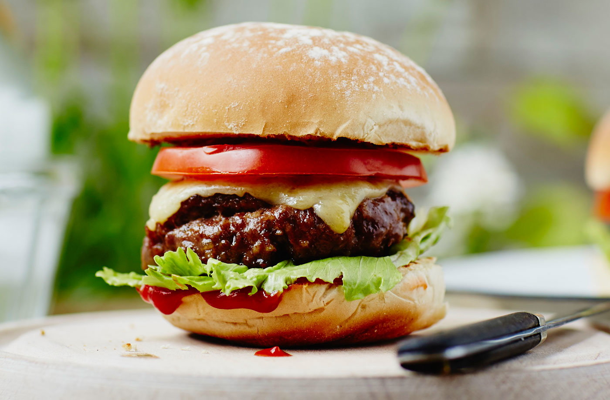

Burger Recipe

Description
This is a fine Tesco burger recipe, looks kinda crazy.
Warning, as it is Tesco, could be horse meat.
Ingredients
- 1/2 tbsp olive oil
- 1 onion, peeled and finely chopped
- 500g pack British Beef Steak Mince 15% fat
- 1 tsp mixed dried herbs
- 1 egg, beated
- 4 slices mature Chedder (optional)
- 4 white rolls
- few route lettuce leaves
- 1 beef tomato, sliced
- ketchup, to serve (optional)
Steps
- Heat olive oil in frying pan, add onion and cook for 5 mins till soft and golden
- In bowl, combine beef mince with herbs and egg. Season, add oinions and mix, then shape into 4 patties
- Cook burgers on preheated barbecue or griddle for 5-6 mins on each side. Lay slice of cheese while second side is cooking
- Lightly toast cut buns on barecue. Fill with lettuce, burgers and tomato slices, and ketchup if desired